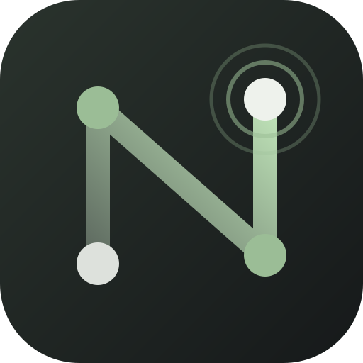
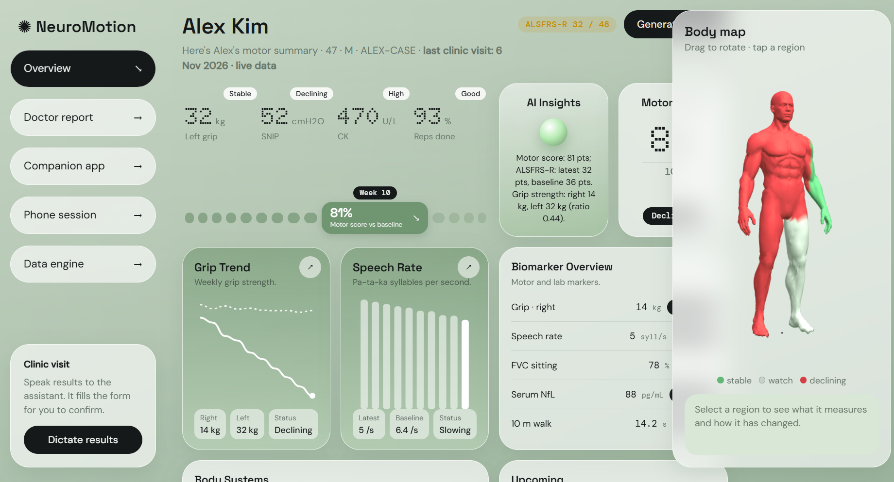

Family history
Medical history
Symptoms
Test results
Take input from the doctor in the form of family history, medical history, current symptoms, test results

A data integration program for early detection of ALS.
Take input from the doctor in the form of family history, medical history, current symptoms, test results
Track and display the trend of the patient's speaking ability over time
Track and display the trend of the patient's movement ability over time in the affected areas
Report on the similarity between the patient's case and ALS-diagnosed patient cases

Display the information on a single web page
A baseline from speech and movement data lets us track concerning changes.
Each case is compared with four features seen in ALS:
One patient, one phone, one doctor's report.